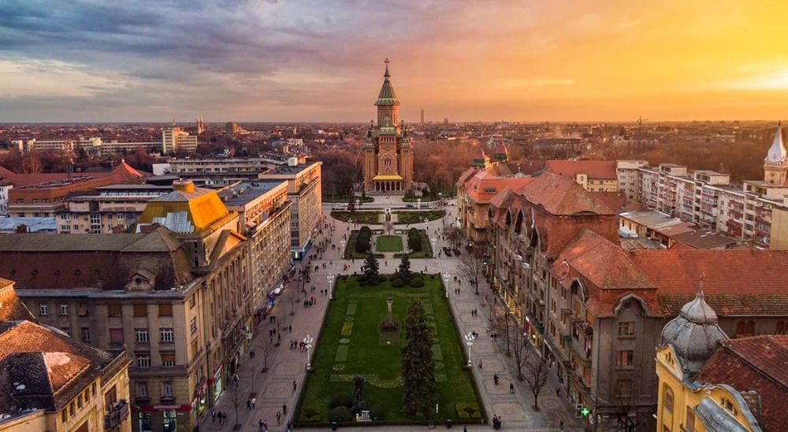

Explorați Timișoara - Orașul diversității și inovației
Timișoara este un oraș vibrant și inovativ din vestul României, oferind o varietate de atracții captivante pentru vizitatori:
-

Piața Victoriei - Inimă culturală
Centrul orașului găzduiește evenimente culturale și manifestări diverse, reflectând diversitatea comunității.
-

Opera Națională - Artă și muzică
Un centru de cultură și artă ce găzduiește spectacole și concerte de înaltă calitate.
-

Revolutția din 1989 - Istorie modernă
Timișoara a fost locul unor evenimente semnificative în cadrul revoluției românești din 1989.
-

Parcuri și recreere - Natură în oraș
Oaze de verdeață și spații de relaxare pentru a scăpa de agitația urbană.
-

Creativitate și inovație - Energie modernă
Timișoara este un centru de inovație, tehnologie și industrie creativă în creștere.
Concluzii
Timișoara este un oraș dinamic, cu o moștenire culturală bogată și o energie modernă care îi atrage pe vizitatori.